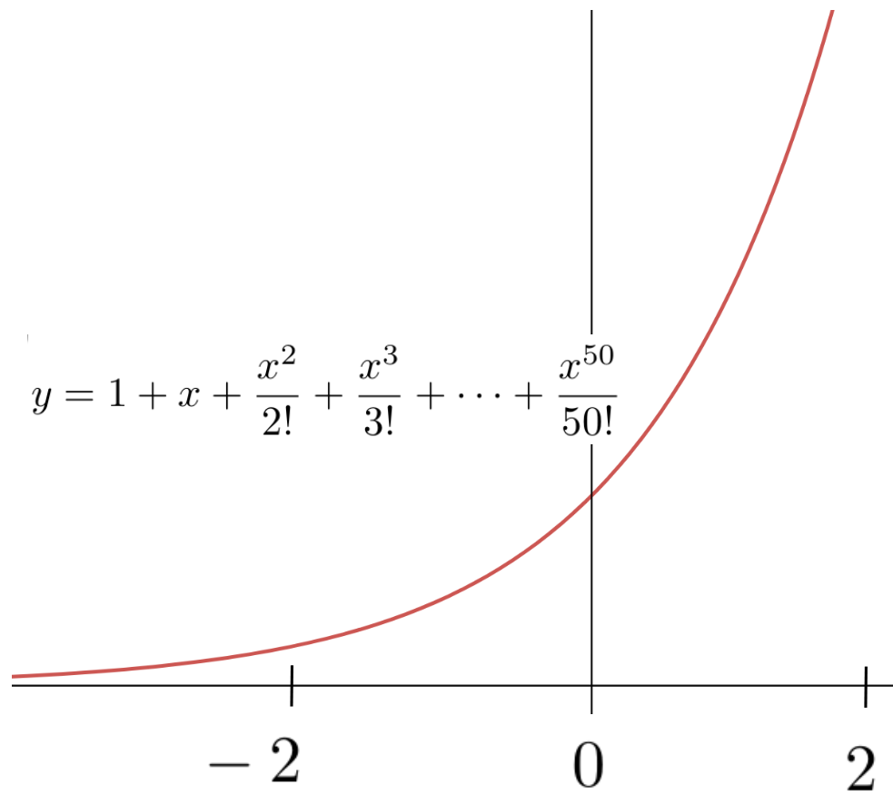

You are already familiar with fourteen of the so-called elementary functions in mathematics. These are:
\underline{Polynomials:} Polynomials are functions of the form: \(f(x) = c_0+c_1x+c_2x^2+c_3x^3+\ldots+c_{n-1}x^{n-1}+c_nx^n,\) where \(c_0, \ldots, c_n\) are constants.
\underline{Rational Functions:} The rational functions are quotients of polynomials:
where \(a_1, \ldots, a_n, b_1, \ldots, b_m\) are constants.
\underline{Trigonometric Functions:} There are six trigonometric functions: \(\sin(\theta)\text{,}\)\(\cos(\theta)\text{,}\)\(\tan(\theta)\text{,}\)\(\cot(\theta)\text{,}\)\(\sec(\theta)\text{,}\) and \(\csc(\theta).\)
\underline{Trigonometric Inverses:} Each of the trigonometric functions has an associated inverse: \(\inverse\sin(\theta)\text{,}\)\(\inverse\cos(\theta)\text{,}\)\(\inverse\tan(\theta)\text{,}\)\(\inverse\cot(\theta)\text{,}\)\(\inverse\sec(\theta)\text{,}\) and \(\inverse\csc(\theta).\)
Algebraically combining this basic set of fourteen functions allows us to build almost all of the functions you have encountered so far in your mathematics education. Loosely speaking what makes these elementary is that we don’t need Calculus to define them.
But Calculus gives us several different ways to define a multitude of new functions. Each such function is a new tool. New tools give us the means to solve new problems, and a new way to approach old problems. This is one reason that the invention of Calculus was such an important advance.
Functions which require Calculus for their definition are (usually) called analytic functions\aside{The precise definition of analytic actually comes directly from the work we did in [cross-reference to target(s) "SECmore-high-deriv" missing or not unique] on approximating functions with polynomials. But one way or another the definition of analytic is tied to Calculus.}.
The exponential and logarithmic functions which we take up next occupy a middle ground between the elementary and the analytic functions. They can be defined without Calculus, which is why you’re probably already familiar with them. But in some ways it is better to use Calculus. The exponential functions give us our first, fairly easy-to-understand introduction to the construction of new functions using Calculus so we will start there.
Subsection8.1.1Initial Value Problems (IVPs)
Let’s step back for a moment. Recall that an IVP consists of two parts:
The differential equation (for example, \(\dfdx{y}{x}=2x\)), and
The initial value\aside{It’s called an initial value because when time is the independent variable we usually know the value of our function initially, when \(t=0.\)} (for example, \(y(0)=0\)).
A common way to create new functions using Calculus is by defining the new function to be the solution(s) of a specified IVP.
Example8.1.
We’ve seen that when we differentiate the formula \(y=x^2\) we get the differential equation \(\dx{y} = 2x\dx{x},\) or
If we did not already know that the function \(y(x)=x^2\) satisfies [cross-reference to target(s) "EQx2diffeq" missing or not unique]) we could give a name to the solution (sqr\((x)\text{,}\) perhaps?) and by fiat, define sqr\((x)\) to be whatever function solves this equation. But there is a problem. The solution of [cross-reference to target(s) "EQx2diffeq" missing or not unique]) is a multifunction, remember? To choose a single branch we need to impose an initial condition.
Drill8.2.
Solve each of the following IVPs. Graph your solutions:
(a)
\(\dfdx{y}{x}=2x,\ \ \ y(0)=0\)
(b)
\(\dfdx{y}{x}=2x,\ \ \ y(0)=1\)
(c)
\(\dfdx{y}{x}=2x,\ \ \ y(0)=-10\)
(d)
\(\dfdx{y}{x}=2x,\ \ \ y(1)=2\)
(e)
\(\dfdx{y}{x}=2x,\ \ \ y(-1)=1\)
(f)
\(\dfdx{y}{x}=x,\ \ \ y(0)=1\)
(g)
\(\dfdx{y}{x}=2x,\ \ \ y(x_0)=y_0\) where \(x_0\) and \(y_0\) are fixed, but unspecified constants.
Simply naming the function tells us nothing about it. However the IVP itself can give us a some insight into the nature of the solution. For example since \(2x\lt 0\) when \(x\lt 0\text{,}\) the slope of the graph of \(y(x)\) is clearly also negative when \(x\lt 0\text{,}\) Similarly, the slope of the graph of \(y(x)\) is positive when \(x\gt 0\text{.}\)
Of course we already knew that since we have a formula for \(y(x)=\text{sqr}(x)=x^2\text{.}\) This won’t be true in the next section.
Section8.2The Natural Exponential
\TLogo{PSP:four-proof-irrat} In exactly the same way that we can define \(\text{sqr}(x)\) via any of the Initial Value Problems in [cross-reference to target(s) "DRILLIVP-sqr" missing or not unique] we can declare, by fiat, the following:\\
is called the natural exponential function, denoted \(\exp(x)\text{.}\)
But of course as we said earlier, simply giving the function a name does not tell us anything about it.
In [cross-reference to target(s) "SECeulers-method" missing or not unique] we investigated this IVP in some detail and we were able to draw an approximate graph of the natural exponential (at least near the initial value, \(\exp(0)\)). We will explore this function further here.
Recall that the Taylor Polynomial of a function, as described in [cross-reference to target(s) "SECmore-high-deriv" missing or not unique], [cross-reference to target(s) "EQTaylorFormula" missing or not unique], given by\aside{Recall that the parenthetical superscript, \((n)\text{,}\) indicates the \(n\)th derivative. Thus \(y^{(2)}(x)\) represents the second derivative of \(y(x)\text{,}\)\(y^{(3)}\) represents the third derivative, and so on.}
can approximate the function \(y(x)\) well, near a given point. Since we know the value of the natural exponential at the initial value let’s try to generate the Taylor Polynomial approximation of \(\exp(x)\) near that point.
Notice that because \(\exp(x)\) satisfies [cross-reference to target(s) "IVPExpDiffeq" missing or not unique]) it also satisfies each of the following (why?):
Let \(T_n(x)\) be the \(n\)th degree Taylor polynomial approximation of \(\exp(x)\) and use [cross-reference to target(s) "EQExpDerivs" missing or not unique]) and the initial value, \(\exp(0)=1\) to show that
It is now time to solve [cross-reference to target(s) "IVPExpDiffeq" missing or not unique]) by finding an explicit formula for \(\exp(x)\text{.}\)
But how? Nothing really presents itself as a potential solution so what should we do? Since we don’t seem to have any better options, let’s see if we can guess a solution.
So let’s take a guess. There is no need to get really crazy about it though. We already know that the Taylor polynomial of \(\exp(x)\) approximates \(\exp(x)\text{.}\) Maybe we can find an \(n\) large enough that the approximation becomes exact.
Problem8.5.
Show that none of the following\aside{The notation \(3!\) is read ``three factorial’’ and means \(3\cdot2\cdot1.\) Similarly \(4!=4\cdot3\cdot2\cdot1\) and in general \(n!=n(n-1)(n-2)\ldots3\cdot2\cdot1\)} is a solution of [cross-reference to target(s) "DEFnatural-exponential-ivp" missing or not unique]).\\ \hint{Observe that if \(y(x)\) is a solution then \(y-\dfdx{y}{x}=0\text{.}\)}
Show that none of the following\aside{The notation \(3!\) is read ``three factorial’’ and means \(3\cdot2\cdot1.\) Similarly \(4!=4\cdot3\cdot2\cdot1\) and in general \(n!=n(n-1)(n-2)\ldots3\cdot2\cdot1\)} is a solution of IVP~(\ref{def:natural-exponential-ivp}).\\ \hint{Observe that if \(y(x)\) is a solution then \(y-\dfdx{y}{x}=0\text{.}\)}
Since the difference between \(y\) and \(\dfdx{y}{x}\) is that stupid one-millionth term -- which is very small -- it is clear that we’ve almost got something here. Surely we can handle that last term somehow!
Sadly no, we can’t. In fact no polynomial will solve [cross-reference to target(s) "IVPExpDiffeq" missing or not unique]).
Problem8.7.
Show that the previous paragraph is true. That is, show that there is no (non-zero) polynomial that solves the differential equation: \(\dfdx{y}{x}=y.\) \\ \hint{Consider the degree of the polynomial and the degree of its derivative.}
Since no polynomial will work a fair question is: Why have we taken you on this wild goose chase?
In fact, we almost have a solution here. One million is a very large number, so one million factorial (\(1000000!\)) is inconceivably large. Thus for any value of \(x\) we’re likely to encounter that one millionth term, \(\frac{x^{1000000}}{1000000!},\) is so incredibly close to zero that it almost isn’t really there. And if it isn’t really there then
No, of course not. Although that last term really is practically zero it is not actually zero, no matter how small it is. As Newton said, ``In mathematics the smallest of errors must be dealt with\aside{Newton wrote his scientific works in Latin. This is a very loose translation of the phrase ``In rebus mathematicis erores quam minimi non sunt contemnendi.’’ from his book Quadraturam Curvarum (On the Quadrature of Curves).}.’’
So we haven’t solved our problem in the sense of having an explicit formula for \(\exp(x)\text{.}\) But we do know a great deal about it at this point. In particular we know that the Taylor polynomial \(1+x+\frac{x^2}{2!}+\frac{x^3}{3!} + \ldots +
\frac{x^{999999}}{999999!} + \frac{x^{1000000}}{1000000!}\) will be a very good approximation of \(\exp(x)\text{,}\) at least for values of \(x\) near zero.
But if there is no polynomial that solves [cross-reference to target(s) "IVPExpDiffeq" missing or not unique]) does that mean there is no solution at all? Certainly not. In fact, since that last term of the polynomial seems to be the stumbling block the solution is clear: All we need to do is not have a last term.
This is a startling idea but before we dismiss it, let’s take our own advice from [cross-reference to target(s) "DIGRESSEffectiveGuessing" missing or not unique]. We’ll trust our intuition, but also examine it closely. What we’re saying is that the solution of [cross-reference to target(s) "IVPExpDiffeq" missing or not unique]) is:
where the dots at the end mean that the summation goes on forever. There is no last term.
You would expect a polynomial that doesn’t end to be called an infinite polynomial but it is not. Such an expression is called an infinite series. Usually we just call it a series. A series is not a polynomial. That is, a polynomial is defined to have only finitely many terms and a series is defined to have infinitely many terms. We distinguish them from each other specifically so that we don’t confuse a series with a polynomial.
An obvious question to ask is, ``Does this infinite series even mean anything?’’ Or, equivalently, ``What does it mean to add up infinitely many numbers?’’ These are excellent questions which will have to be addressed eventually. But for now we won’t let them trouble us. We’ll just assume that \(y=1+x+\frac{x^2}{2!}+\frac{x^3}{3!}+\ldots\) makes sense, in the same way we assumed that differentials make sense and defer those questions until later.
Problem8.8.
Having set aside those deeper questions (for now) we can show that we have found the solution of our IVP.
(a)
Differentiate the series \(\displaystyle y= 1+x+\frac{x^2}{2!}+\frac{x^3}{3!} + \ldots \) term-by-term to show that \(\displaystyle \dfdx{y}{x}= y\text{.}\)
(b)
Show that \(y(0)=1.\) \\ \hint{Yes, this really is as easy as it looks.}
Problem8.9.
(a)
Differentiate the series \(\displaystyle y= 1+x+\frac{x^2}{2!}+\frac{x^3}{3!} + \ldots \) term-by-term to show that \(\displaystyle \dfdx{y}{x}= y\text{.}\)
(b)
Show that \(y(0)=1.\) \\ \hint{Yes, this really is as easy as it looks.}
We would be remiss if we did not mention that we have lead you up to the edge of an abyss here. It is not at all clear that the Sum Rule for differentiation can be extended to infinite sums in any meaningful manner. In fact, this is a very delicate question. Sometimes the extension is valid and sometimes it is not. This is another of the foundational questions (like ``What is a differential?’’) that took mathematicians nearly \(200\) years to resolve and understanding that resolution requires the use of considerably more subtle tools than we have at this point. You will learn more about this in the next course. For now we will assert the prerogative of the teacher and simply tell you that in this case term-by-term differentiation still works.
[cross-reference to target(s) "PROBLEMTaylorSeries1" missing or not unique] shows that we appear to have the exact solution of [cross-reference to target(s) "IVPExpDiffeq" missing or not unique]) in the form of the infinite series,
This actually is a correct solution of [cross-reference to target(s) "IVPExpDiffeq" missing or not unique]), and eventually you will learn to work with infinite series solutions of IVPs directly. But, unfortunately, we don’t yet have the tools that allow us to do that. So we will have to find another way. What now?
At the left is the graph of the polynomial \(y= 1+x+\frac{x^2}{2!}+\frac{x^3}{3!}+ \cdots + \frac{x^{50}}{50!}\) which we believe, from our work in [cross-reference to target(s) "SECmore-high-deriv" missing or not unique], should be a good approximation to \(\exp(x)\text{,}\) at least when \(x\) is near zero. When we zoom in on the part of the graph which is near \(x=0\) we see that the following graph should be a reasonable approximation to the solution of [cross-reference to target(s) "IVPExpDiffeq" missing or not unique] in the interval shown.

In your earlier math courses you may have seen graphs that looked like this before. If not, then consider the following graphs of the exponential functions, \(y=2^x\) and \(y=3^x\) and notice that they are very similar to the graph of \(y=
1+x+\frac{x^2}{2!}+\frac{x^3}{3!}+ \cdots + \frac{x^{50}}{50!}\text{.}\)
This is much clearer when we graph all three functions on the same axes as seen here:
As you can plainly see near \(x=0\) they are indeed very similar.
Since the polynomial \(y= 1+x+\frac{x^2}{2!}+\frac{x^3}{3!}+
\cdots + \frac{x^{50}}{50!}\) is an approximation to the solution of [cross-reference to target(s) "IVPExpDiffeq" missing or not unique] it appears that either of \(y(x)=2^x\) or \(y(x)=3^x\) might be a viable candidate for the solution of our IVP. Is it possible we’ve had the solution in our hands all along? Let’s differentiate \(y(x)=2^x\) to see if solves [cross-reference to target(s) "IVPExpDiffeq" missing or not unique]).
If \(y(x)=2^x\) then \(y(0)=2^0=1\) so the initial condition is satisfied.
To check the differential equation it is tempting to assume that we can apply the Power Rule, giving us \(\dfdx{(2^x)}{x} = x2^{x-1}\text{.}\) But this can’t possibly be correct because when \(x\) is negative then \(x2^{x-1}\) is also negative. But the slope of \(y(x)=2^x\) is positive everywhere as you can see from its graph.
In fact, none of our differentiation rules will give us the derivative of \(y=2^x.\) So we will have to go back to basics and find \(\dfdx{y}{x}\) from first principles, without using any of our Differentiation Rules.
Let \(y(x)=2^x\) and observe that \(\dx{y}\) is the (infinitesimal) difference between \(y(x+\dx{x})\) and\aside{Our notation fails us a bit here. Recall that \(y(x)\) is a function so \(y(x+\dx{x})\) means ``\(y\) evaluated at \(x+\dx{x}\text{.}\)’’ This is not multiplication. } \(y(x)\text{,}\) or \begin{align*} \dx{y}\amp =y(x+\dx{x})-y(x)\\ \intertext{ Since \(y(x+\dx{x})\) is equal to \(2^{x+\dx{x}}\) and \(y(x)=2^x\) we have,} \dx{y} \amp =2^{x+\dx{x}}-2^x.\\ \end{align*} Thus
The differential in the exponent is a bit concerning. We will have to be clever.
We have become comfortable thinking of \(\dx{x}\) as infinitely small, but it should be clear that if we take \(\dx{x}\) to be a very small, but finite number, say \(\dx{x}= 0.0000001,\) we can use [cross-reference to target(s) "EQd(2^x)" missing or not unique]) to approximate \(\dfdx{y}{x}\) as accurately as we wish.
Replacing \(\dx{x}\) with \(0.0000001\) on the right side of [cross-reference to target(s) "EQd(2^x)" missing or not unique]) we get
This isn’t bad for a first try! Do you see that we have almost satisfied the differential equation? We have \(\dfdx{(2^x)}{x}\approx (0.7)2^x\) when what we need is \(\dfdx{(2^x)}{x}=2^x\text{.}\) The constant factor is a bit too small. If it were \(1\) instead of \(0.7\) we’d have the solution of [cross-reference to target(s) "IVPExpDiffeq" missing or not unique]). This is hopeful.
Performing the same calculation using \(y(x)=3^x\) we see that once again we almost have a solution:
The initial condition is still satisfied and once again the differential equation [cross-reference to target(s) "IVPExpDiffeq" missing or not unique]) is {\it almost} satisfied. But this time the coefficient, \(1.1\) is a bit too big.
It stands to reason that there must be some number between \(2\) and \(3\) with the property that \(y=(\text{number})^x\) satisfies [cross-reference to target(s) "IVPExpDiffeq" missing or not unique]). For historical reasons this number, whatever it is, has been named \(e\text{.}\) So the solution of [cross-reference to target(s) "IVPExpDiffeq" missing or not unique]) is
\begin{equation*}
\exp(x)=e^x.
\end{equation*}
The function \(y(x)=e^x\) is called the natural exponential function\aside{You can decide for yourself how natural this really is. Opinions vary. But whether you decide you like this name or not it is the name everyone uses so we’re stuck with it.} and \(e\) is its base just as \(2\) is the base of the exponential function \(y(x)=2^x\) and \(3\) is the base of the exponential function \(y(x)=3^x\text{.}\)
Of course, we only know that \(2\lt e\lt3\) so far. How might we find a better approximation to \(e\text{?}\)
The upshot of [cross-reference to target(s) "DRILLComputingE" missing or not unique] is that if we replace \(2\) with \(e\approx 2.718\) in [cross-reference to target(s) "EQExp2" missing or not unique], or if we replace \(3\) in [cross-reference to target(s) "EQExp3" missing or not unique] the constant we get should be closer to \(1\) than either \(0.7\) or \(1.1\text{.}\)
We did not get exactly \(1\) because \begin{enumerate} \item We used an approximation of \(e\text{,}\) not \(e\) itself, and \item \(0.0000001\) is a very small, finite number, not a differential. \end{enumerate} But the evidence is compelling that \(\exp(x)=e^x\) is the solution of the [cross-reference to target(s) "IVPExpDiffeq" missing or not unique]). Henceforth then, we will reserve the letter \(e\) to designate the base of the natural exponential function.
You might ask, ``Why not just figure out what \(e\) actually is, and use that? Why use the letter \(e\text{?}\)’’ The answer is that \(e\) is an irrational number much like \(\pi\text{.}\) Among other things this means that its decimal expansion never ends, so we use \(e\) for the same reason we use \(\pi\text{.}\)
We now have a new differentiation rule to remember. This one is particularly easy to remember: The natural exponential function is its own derivative,
Compute \(\dx{y}\) for each of the following, and use this to find the IVP that each one solves. \\ \hint{Use a substitution to make each one easier on your eyes.}
(a)
\(y=e^{2x}\)
(b)
\(y=e^{\pi x}\)
(c)
\(y=e^{\sqrt{2}x}\)
(d)
\(y=e^{rx}\) where \(r\) is an unknown constant.
(a)
(b)
(c)
(d)
(e)
(f)
(g)
(h)
(i)
(j)
(k)
(l)
For each of the following find \(\dfdx{y}{x}\text{:}\)
Show that when we use Newton’s Method to approximate the coordinates of the intersection point of the curves \(y = -x\) and \(y = e^x\text{,}\) we get the iteration formula
Starting with \(r_0=0\) compute \(r_1, r_2\text{,}\) and \(r_3\text{.}\) Compare your approximation with a solution obtained from whatever computing technology you prefer.
Problem8.13.
(a)
Show that when we use Newton’s Method to approximate the coordinates --> of the intersection point of the curves \(y = -x\) and \(y = e^x\text{,}\) we get the iteration formula
Starting with \(r_0=0\) compute \(r_1, r_2\text{,}\) and \(r_3\text{.}\) Compare your approximation with a solution obtained from whatever computing technology you prefer.
Problem8.14.Find the Pattern.
(a)
Compute \(\dfdx{y}{t}\) for each of the following:
\(\displaystyle y=te^t\)
\(\displaystyle y=(t+1)e^t\)
\(\displaystyle y=(t^2+t+1)e^t\)
\(\displaystyle y=(t^3+t^2+t+1)e^t\)
(b)
From your work in part (a) what do you expect \(\dfdx{y}{t}\) to be if
Show that your guess is correct or find the correct solution if you guessed wrong.
Problem8.15.
For each of the following, assume that \(x=x(t)\text{,}\)\(y=y(t)\text{,}\) and \(z=z(t)\text{.}\) Find an equation relating \(\dfdx{x}{t}\text{,}\)\(\dfdx{y}{t}\text{,}\) and \(\dfdx{z}{t}\text{.}\)
(a)
\(e^y=x^2+3z-2\)
(b)
\(\sin(xy)=(e^z)^y\)
(c)
\(\tan(x+z)=e^ye^x\)
(d)
\(e^{xyz}=3\)
(e)
\(x^2+y^2+z^2=2\)
(f)
\(e^{x^2+y^2+z^2}=2\)
Problem8.16.
(a)
Show that \(y=e^{t+a}\) satisfies \(\dfdx{y}{t}=y\) for any constant \(a\text{.}\)\\ \comment{This problem is not the same as [cross-reference to target(s) "IVPExpDiffeq" missing or not unique]). How does it differ?}
(b)
Show that \(y=Ae^t\) also satisfies \(\dfdx{y}{t}=y\) for any constant \(A\text{.}\)
(c)
Parts (a) and (b) imply that \(e^{t+a}=Ae^t\text{.}\) Use this knowledge to to show that
Show that \(y=e^{t+a}\) satisfies \(\dfdx{y}{t}=y\) for any --> constant \(a\text{.}\)\\ \comment{This problem is not the same as IVP~(\ref{IVP:ExpDiffeq}). How does it differ?}
(b)
Show that \(y=Ae^t\) also satisfies \(\dfdx{y}{t}=y\) for any constant \(A\text{.}\)
(c)
Parts (a) and (b) imply that \(e^{t+a}=Ae^t\text{.}\) Use this knowledge to to show that
Show that \(y=e^{t+a}\) satisfies \(\dfdx{y}{t}=y\) for any constant \(a\text{.}\)\\ \comment{This problem is not the same as IVP~(\ref{IVP:ExpDiffeq}). How does it differ?}
(b)
Show that \(y=Ae^t\) also satisfies \(\dfdx{y}{t}=y\) for any constant \(A\text{.}\)
(c)
Parts (a) and (b) imply that \(e^{t+a}=Ae^t\text{.}\) Use this knowledge to to show that
You might recognize this property of exponents from your Algebra class.
Problem8.19.
(a)
For \(y=e^x\text{,}\)\(y=\sin(x)\text{,}\) and \(y=\cos(x)\) compute
\(\displaystyle \displaystyle\dfdx{y}{x}\)
\(\displaystyle \displaystyle\dfdxn{y}{x}{2}\)
\(\displaystyle \displaystyle\dfdxn{y}{x}{3}\)
\(\displaystyle \displaystyle\dfdxn{y}{x}{4}\)
(b)
Does it seem significant that \(\dfdxn{y}{x}{4}=y\) for all three functions? What does your intuition say?
Subsection8.2.1Hyperbolic Trigonometry: The Hanging Chain
We commented in [cross-reference to target(s) "SECbridg-chains-telesc" missing or not unique] that Galileo believed erroneously that a chain hanging from two pegs falls naturally into the shape of a parabola. In [cross-reference to target(s) "PICcatenary" missing or not unique] we showed that Galileo was wrong but we have not yet addressed the question: What is the shape of a hanging chain?
Recall that the hanging chain must satisfy the differential equation
where \(w\) is the weight density of the chain and \(H\) is the (constant) magnitude of the horizontal tension. In [cross-reference to target(s) "PROBLEMHangingChain" missing or not unique] we will see that although the natural exponential function \(y=e^x\) is not the solution itself, it is the key to the solution.
\begin{embeddedproblem}[The Shape of a Hanging Chain] ;;; MULTILEVEL PROBLEM ;;; MULTILEVEL PROBLEM The Calculus in this problem is pretty straightforward but the Algebra gets a bit messy. To avoid some of this mess in parts (a), (b), and (c) we will solve the special case where \(\frac{w}{H}=1\text{.}\) In part (d) we’ll use our solution of this special case to solve the original problem. So assume that \(\frac{w}{H}=1\text{.}\) For this special case we will call our variables \(X\) and \(Y\text{,}\) rather than \(x\) and \(y\text{.}\) The reasons for this will become clear in part (d). \begin{enumerate}[label={ (\alph*)}] \item Show that \(1+\left(\frac{e^X-e^{-X}}{2}\right)^2=\left(\frac{e^X+e^{-X}}{2}\right)^2.\)\\ \hint{It might help to make the substitution \(e^X=a\) just to make things ``easier on the eyes.’’ That makes \(e^{-X}=\frac1a.\)} \item Show that \(\dfdx{ \left(\frac{1}{2}(e^X+ e^{-X})\right)}{X}=
\frac{1}{2}(e^X- e^{-X}) \) and that \(\dfdx{ \left(\frac{1}{2}(e^X- e^{-X})\right)}{X}=
\frac{1}{2}(e^X+ e^{-X})\) \item Show that the curve \(Y=\frac12\left(e^X+e^{-X}\right)\) satisfies differential Equation~(\ref{eq:CatenaryDiffeq}):
where \(w\) is the weight density of the chain, and \(H\) is the constant (magnitude of the) horizontal tension.\\ \hint{This is essentially the same computation you did for the special case, but the Algebra is messier. Consider making it ``easier on the eyes’’ with the substitutions
\begin{equation*}
X=\frac{wx}{H} \text{ and }
Y(X)=\frac12\left(e^X+e^{-X}\right).
\end{equation*}
We already know from part (c) that \(\dfdxn{Y}{X}{2}=\sqrt{1+\left(\dfdx{Y}{X}\right)^2}\text{.}\) Notice that \(y=\frac{H}{w}Y(X)\) and use this to show that \(\dfdx{y}{x}=\dfdx{Y}{X}\text{ and that }
\dfdxn{y}{x}{2}=\frac{w}{H}\dfdxn{Y}{X}{2}.\) } \item Assume \(w=1,\) and \(H=1\) and graph the curve given by Equation~(\ref{eq:CatSol}). Does it look like a hanging chain? What happens to the graph if we use \(w=1, H=2\) or \(w=2, H=1.\) Does this make sense physically? Why or why not?\\ \end{enumerate} \end{embeddedproblem}
The expressions \(\frac12\left(e^x+e^{-x}\right)\) and \(\frac12\left(e^x-e^{-x}\right)\) arise frequently in many scientific and engineering problems and have been named the hyberbolic cosine and hyberbolic sine and are denoted \(\cosh(x)\) and\aside{Traditionally, \(\sinh\) is read as ``cinch’’.} \(\sinh(x)\text{,}\) respectively. As you see these names break with the longstanding mathematical tradition of giving important functions three letter names. Why do you suppose we would do that?
Recall that the unit circle, \(x^2+y^2=1\text{,}\) is parameterized by
That is, show that \(x^2-y^2=\cosh^2(t)-\sinh^2(t)=1\text{.}\)
The obvious similarity between the formulas
\begin{equation*}
\cos^2(x)+\sin^2(x)=1
\text{ and } \cosh^2(x)-\sinh^2(x)=1
\end{equation*}
is not a coincidence. It also explains why they are called Hyperbolic Trigonometric Functions.
The many scientific and engineering problems that involve the hyperbolic functions are slightly outside the scope of this text. So we will only examine some of their more elementary properties in the next problem.
\begin{embeddedproblem} ;;; MULTILEVEL PROBLEM ;;; MULTILEVEL PROBLEM In addition to \(\cosh(x)\) and \(\sinh(x)\) we make the following definitions which are clearly modeled on the definitions of the trigonometric functions: \begin{description}%[label={ (\alph*)}] \item[\(\tanh(x)\)] \(\displaystyle=\frac{\sinh(x)}{\cosh{(x)}},\) \item[\(\coth(x)\)] \(\displaystyle=\frac{\cosh{(x)}}{\sinh(x)},\) \item[\(\sech(x)\)] \(\displaystyle=\frac{1}{\cosh{(x)}},\) \item[\(\csch(x)\)] \(\displaystyle=\frac{1}{\sinh(x)}.\) \end{description} \begin{enumerate}[label={ (\alph*)}] \item Show that \begin{enumerate}[label={ (\roman*)}] \item \(\displaystyle\dfdx{(\cosh(x))}{x} = \sinh(x)\) \item \(\displaystyle\dfdx{(\sinh(x))}{x} = \cosh(x)\text{.}\) \item \(\displaystyle\dfdx{(\tanh(x))}{x} = \sech^2(x)\text{.}\) \item \(\displaystyle\dfdx{(\coth(x))}{x} = -\csch^2(x)\text{.}\) \item \(\displaystyle\dfdx{(\sech(x))}{x} = -\sech(x)\tanh(x)\text{.}\) \item \(\displaystyle\dfdx{(\csch(x))}{x} = -\csch(x)\coth(x)\text{.}\) \end{enumerate} \item Show that: \(\sinh(-x)=-\sinh(x)\) \item Show that: \(\cosh(-x)=\cosh(x)\) \item Show that: \(\displaystyle \sinh(x\pm y)=\sinh(x)\cosh(y)\pm \cosh(x)\sinh(y).\) \item Show that: \(\displaystyle \cosh(x\pm y)=\cosh(x)\cosh(y) \pm \sinh(x)\sinh(y).\) \item Compare each of the identities above with the corresponding trigonometric identity. \end{enumerate} \end{embeddedproblem}
Problem8.21.
Show that \(y=\cosh(x)\) and \(y=\sinh(x)\) both satisfy the differential equation:
\begin{equation*}
\dfdxn{y}{x}{2} = y
\end{equation*}
and compare this with [cross-reference to target(s) "PROBLEMSinCosDiffeq" missing or not unique].
When he designed the Gateway Arch\aside{For more information on the history and mathematics of the Gateway Arch, see the article by Robert Osserman How the Gateway Arch Got its Shape 4 in St. Louis, Missouri, architect Eero Saarinen 5 wanted to build it in the shape of an inverted catenary. The arch would have a height of \(630\) feet and a width of \(630\) feet. Its cross sections would be equilateral triangles with sides \(54\) feet at ground level shrinking to \(17\) feet at the top. To obtain the shape of the arch, Saarinen decided that the centers of the triangular cross sections should follow the curve
Show that \(y=68.7672\cosh(0.0100333x)\) is not a true catenary.
(b)
Plot the graph of Equation~(\ref{eq:GatewayArch1}), and determine the \(x\) and \(y\) intercepts.
(c)
Notice that the answers in part (b) do not determine an arch whose height and width are exactly \(630\) feet. This is because this curve represents the centers\aside{Actually the centroids. You will learn about centroids when you take Integral Calculus.} of the triangular cross sections.
The sketch below represents the cross-section of the the arch, which is an equilateral triangle. In the sketch each side is equal to \(s\text{,}\) and the point \(P\) is equidistant from \(A\text{,}\)\(B\text{,}\) and \(C\text{.}\) Show that the perpendicular distance from \(P\) to one side is \(\frac{s}{2\sqrt{3}}\text{.}\)\\ \centerline{\includegraphics*[height=.8in,width=1in]{../Figures/CentroidArch}}
Use the result in part (i) to determine the height and width of the arch.
(d)
The curve Saarinen used is called a \term{weighted catenary}. It is the shape of a hanging chain whose density is not uniform. Saarinen decided to go with this since the size of the triangles was decreasing as they approached the apex of the arch. A true catenary arch would be something of the form
Graph equations~(\ref{eq:GatewayArch1}) and~(\ref{eq:GatewayArch2}) on the same set of axes and use this to show that they both have the same requisite height and width.
Section8.3Exponential Growth
Example8.24.Population Growth.
Suppose we start with a colony of \(10\) grams of bacteria in a Petri dish and we wish to model the growth of the population as a function of time. In order to keep our initial discussion simple we begin by assuming that \(30\)\% of our bacteria divide once per day at the same time. Such a population is growing at a rate of \(30\)\% per day. If we start with \(10\) grams of bacteria on day zero, then on day one we’ll have \(30\%\) more, or \(13\) grams. On day two we’ll have \(30\%\) more than on day one, or \(16.9\) grams. It should be clear that the rate of growth from day \(n\) to day \(n+1\) is proportional to how many bacteria we have on day \(n\text{.}\) Thus from any one day to the next we see that the change in \(P\) (\(\Delta P\)) is given by
\begin{equation*}
\label{eq:DiscBacterModel}
\Delta P = 0.3 P\Delta t
\end{equation*}
where \(\Delta t = 1\) day, and \(\Delta P\) is the change in population on that day.
But we assumed that \(30\)\% of the bacteria were dividing in sync once per day, which is unrealistic. To get closer to reality suppose next that enough of them divide during any one hour so that at the end of one day the population has still grown by \(30\)\%. Then from any one hour to the next we again have [cross-reference to target(s) "EQDiscBacterModel" missing or not unique]) but this time \(\Delta t\) is equal to one hour, or \(\frac{1}{24}\) day. However, we don’t have to measure time in days. If we measure it in hours instead we again have \(\Delta t=1 \text{ hour } = \frac{1}{24} \text{ day}\text{.}\) The constant factor is still \(0.3\) because we assumed that the population was growing at \(30\%\) per day, and this is still true. That factor is called the nominal\aside{The word nominal means ``in name or thought’’ so this is the named growth rate. It is not always the actual growth rate as we will see soon.} growth rate.
If we measure time in seconds the same reasoning will give us [cross-reference to target(s) "EQDiscBacterModel" missing or not unique]), with \(\Delta t=1 \text{ second }
= 1.15741\times 10^{-5} \text{ day}\text{.}\) If we measure in nanoseconds we get [cross-reference to target(s) "EQDiscBacterModel" missing or not unique]), with \(\Delta t=1 \text{ nanosecond } = 1.15741\times 10^{-14} \text{ day}\text{.}\) If we measure time in infinitesimal increments we get
Notice that we are using the Principle of Local Linearity here. In this infinitesimal time interval the nominal growth rate, \(0.3P \text{,}\) is virtually constant and so we are treating it as linear growth.
Since we started with \(10\) grams of bacteria we have the initial condition \(P(0)=10\text{.}\) This says that the amount of bacteria at time \(t\) must satisfy the IVP% \aside{Notice that our units are consistent:
Take specific notice that the differential equation in [cross-reference to target(s) "EQBacteriaIVP" missing or not unique]) expresses the idea that the rate of change of the population, \(\dfdx{P}{t}\text{,}\) is proportional to the size of the population, \(P\text{.}\) The constant of proportionality is \(0.3\text{,}\) or \(30\%\text{.}\)
Clearly there is nothing particularly special about the number \(0.3.\) If our colony had been increasing at a nominal rate of \(15\%\) we’d have arrived at the IVP:
From [cross-reference to target(s) "DRILLExpGrowth1" missing or not unique] we see that a solution of the differential equation in our bacterial growth problem, [cross-reference to target(s) "EQBacteriaIVP" missing or not unique]), is \(\rho(t)= e^{0.3t}\text{.}\) But \(\rho(t)\) does not satisfy the initial condition since \begin{align*} \rho(0)\amp =e^{(0.3)0}\\ \amp = e^0\\ \amp =1\neq10, \end{align*} so \(\rho(t)\) can’t be the solution of our bacterial growth problem, [cross-reference to target(s) "EQBacteriaIVP" missing or not unique]).
We’ve found that \(P(t)= e^{0.3t}\) satisfies the differential equation but not the initial condition. Can we tweak this so that it satisfies the initial condition?
Problem8.25.Find the Pattern.
(a)
Show that \(P(t)=5e^{0.3t}\) solves the differential equation: \(\dfdx{P}{t}=0.3P\text{.}\) What is \(P(0)\text{?}\)
(b)
Show that \(P(t)=20e^{0.3t}\) solves the differential equation: \(\dfdx{P}{t}=0.3P\text{.}\) What is \(P(0)\text{?}\)
(c)
Show that if \(\alpha\) is any constant then \(P(t)=\alpha e^{0.3t}\) solves the differential equation \(\dfdx{P}{t}=0.3P\text{.}\) What is \(P(0)\text{?}\)
(d)
Did your answer in part (c) account for the possibility that \(\alpha=0\text{?}\) If not, redo it assuming that \(\alpha=0\text{.}\) What is \(P(t)\) in this case?
Problem8.26.
(a)
Use the results of parts (a) and (b) of Problem~(\ref{problem:ExpGrowth2}) to show that
\begin{equation*}
P(t)=10e^{0.3t}
\end{equation*}
is the solution of IVP~(\ref{eq:BacteriaIVP}).
(b)
According to the model in part (a), how much did the colony grow over the first day and how does this compare to the growth rate of \(30\%\text{?}\)
(c)
Use the model to predict the size of the colony in \(30\) days. Is this reasonable? What does it say about our assumptions in this problem?
(d)
Suppose our growth rate was \(15\%\) per day. Would the bacteria have grown half as much in the first day as it did when the growth rate was \(30\%\) per day?
Make your best guess.
Use Calculus to test your guess.
In general, if we start with a population of, say \(P_0\text{,}\) and the rate of change of \(P(t)\) is proportional to \(P\) itself then it will satisfy an IVP of the form:
The constant \(r\) is called the nominal growth rate as we’ve seen. Because \(r=\frac{\dfdx{P}{t}}{P}\) it is also called the relative growth rate of the population and is often given as a percentage, as we have done here.
The [cross-reference to target(s) "EQExpGen" missing or not unique]) should look familiar to you. Notice that when \(r=1\) and \(P_0=1\) it is the same as [cross-reference to target(s) "IVPExpDiffeq" missing or not unique])
which we used to define the the natural exponential. Except, of course, for the names of the variables. To put it another way [cross-reference to target(s) "IVPExpDiffeq" missing or not unique]) is the special case of [cross-reference to target(s) "EQExpGen" missing or not unique]) when \(r=1.\) Since these are so similar it is not surprising that the solution of [cross-reference to target(s) "EQExpGen" missing or not unique]) involves the natural exponential.
[cross-reference to target(s) "PROBLEMExpGrowth2" missing or not unique][cross-reference to target(s) "PROBLEMBacteriaIVP1" missing or not unique] suggest, rather convincingly, that the general solution of [cross-reference to target(s) "EQExpGen" missing or not unique]) is
Part (c) in [cross-reference to target(s) "PROBLEMBacteriaIVP1" missing or not unique] indicates that there are limitations to the usefulness of [cross-reference to target(s) "EQBacteriaIVP" missing or not unique]) and its solution, \(P(t)=10e^{0.3 t}\text{.}\) If we use it to predict how much bacteria there would be after one year we get \(P(365)=10e^{0.3\times365}\approx3.59\times10^{48}\) grams. Since current estimates of the mass of the entire universe are around \(6\times10^{27}\) grams, it is pretty clear that our model doesn’t work in the long term.
Clearly the bacteria can not sustain a growth rate of \(30\%\) indefinitely. If nothing else, they will eventually run out of food. Our point here is that this model, like all models, is limited. To use a mathematical model effectively we need to stay within its limitations.
But in the short term this is actually a very good model. The picture at the right shows the surface of Lake Erie during what is called an algal bloom. The green discoloration on the western side of the lake is from an explosive (exponential) growth of algae. When the conditions for algae growth are nearly optimum -- if there is abundant food, there is room for the population to expand into, and the water temperature is exactly right -- the population of algae in Lake Erie tracks with our model nearly perfectly\aside{Except that the nominal growth rate and the initial condition would need to be adjusted to fit the situation.}. The quantity of algae grows exponentially until the conditions become sub-optimal. Then the population of algae drops again to normal levels.
An algal bloom can happen in any body of water where algae grow. They are common in alpine lakes in the early spring when nutrients are released by the melting snow, but the fish and insects that feed on the algae have not yet emerged in large numbers. We will return to this problem in [cross-reference to target(s) "SECpopulation-dynamics" missing or not unique] where we will tweak this model to extend its usefulness to longer periods of time. But for now we will continue to use this exponential growth model with the understanding that for large values of \(t\) it is unreliable.
Problem8.28.
Suppose our bacteria population is increasing at a nominal rate of 10\% per day. If we started with 100 grams, how much would there be after one, two, and three days?
Speaking loosely, the observation that lead us to [cross-reference to target(s) "EQExpGen" missing or not unique] is that the number of baby bacteria in a given generation is proportional to how many parental bacteria were present in the previous generation. Speaking very loosely, more mamas and poppas now, means proportionally more babies later. This is all that is required for exponential growth to occur.
Subsection8.3.1Exponential Functions and Compound Interest
The natural exponential function also arises naturally in financial mathematics. If we invest money in a bond which pays a nominal interest rate of \(5\%\) annually, and the interest is compounded quarterly then the effective yield will be \(5.09\%\text{.}\)
There is a lot of financial jargon in the previous paragraph which makes it hard to understand if we don’t speak financial-ese. So we will take a few pages to learn the vocabulary. After that things will clear up pretty quickly.
To start, the effective yield represents the actual amount of money earned at the end of one year -- how much money the investment actually pays out. For example, if the investment was not compounded at all, then at the end of one year, every dollar invested would yield \(1.05\) in return, so the effective yield is the same as the nominal yield: \(5\text{.}\)
If the investment is compounded semiannually (twice per year), then half of interest earned is paid out midway through the year. This money is then re-invested for the next half year. This is summarized in the table below. The effective yield in this case is approximately \(5.06\%\text{.}\)
The table below shows, in abbreviated form, the computations needed if the investment is compounded three times in a year. Quarterly compounding means that the interest is re-invested four times and is shown in the next table.
Notice how these three tables differ from and are similar to each other. The effective yield comes from the last entry in each table. It is the difference between the amount the investment is worth at the end of the year and what it is worth at the beginning of the year. So if we compound quarterly the effective yield is \(1.0509-1=0.0509=5.09\%. \)
Similarly, if the investment is compounded daily, then the effective yield is \(\left(1+\frac{0.05}{365}\right)^{365}-1\approx0.0513 = 5.13\%\text{.}\) If we compound \(5\%\) nominal interest, \(n\) times in a year, then the return on an investment of one dollar at the end of one year would be \(\left(1+\frac{0.05}{n}\right)^{n}\) dollars, after \(2\) years \(\left(1+\frac{0.05}{n}\right)^{2n}\) dollars, after \(3\) years \(\left(1+\frac{0.05}{n}\right)^{3n}\) dollars.
In general if we let \(A(t)\) denote the value of the investment of one dollar earning \(5\%\) annually, compounded \(n\) times per year, after \(t\) years, we have
What if the investment was compounded continuously? That is, suppose the interest is being continuously paid out and simultaneously reinvested? Obviously, this can’t actually be done, but it comes to the same thing if at the end of the year we get an effective yield that is equal to the effective yield that would come from continuous compounding. All we have to do is figure out what this is.
To do this, it will be convenient to write \(A(t)\) as \begin{align*} A(t)\amp =1\cdot\left(1+\frac{0.05}{n}\right)^{nt}\\ \amp =1\cdot\left(\left(1+\frac{0.05}{n}\right)^{\frac{n}{0.05}}\right)^{0.05t}\\ \amp =1\cdot\left(\left(1+\frac{1}{\frac{n}{0.05}}\right)^{\frac{n}{0.05}}\right)^{0.05t} \intertext{ Setting \(m=\frac{n}{0.05}\) we see that} A(t)\amp =1\cdot\left(\left(1+\frac{1}{m}\right)^{m}\right)^{0.05t}. \end{align*} We are particularly interested in the quantity \(\left(1+\frac{1}{m}\right)^{m}\) as we compound the interest more frequently (as \(m\) becomes very large). The following table shows some values of \(\left(1+\frac{1}{m}\right)^m\text{,}\) for large values of \(m\text{.}\) Does the numbers in the right colum look familiar to you?
In [cross-reference to target(s) "SECexponential" missing or not unique] we saw that \(e\approx2.7182\text{.}\) From this table it would appear that \(\left(1+\frac{1}{m}\right)^m\) approaches the number \(e\) as \(m\) grows larger -- that is, as we compound the interest more frequently. We will show that this is in fact the case in [cross-reference to target(s) "SECmore-indet-forms" missing or not unique].
If this is true (it is) then if we compound the interest continuously we have
This equation was derived under the assumption that our initial investment was only \(1\text{.}\) In general if the initial investment is \(A_0\) we have
The function \(A(t)\) has the same form as our solution of [cross-reference to target(s) "EQBacteriaIVP" missing or not unique] so it must satisfy the differential equation: \(\dfdx{A}{t}= 0.05A\text{.}\) Confirm that it does.
This is interesting. It appears that [cross-reference to target(s) "EQExpGen" missing or not unique] models continuously compounded investments as well as population growth. Does this make sense to you?
Think about it for a moment. When money invested the rate of return (rate of growth) is always proportional to the initial investment, in the same way that the rate of growth of a population (the rate of return) is. Speaking very loosely, the amount of baby dollars in the next generation will be proportional to the amount of mama dollars and papa dollars 7 in the current generation in the same way that the number of baby bacteria in the next generation is proportional to the number of parent bacteria now. So it makes sense that these two very different real world phenomena are modeled by the same IVP.
From the point of view of a banker or a biologist, these are very different problems so we assign different meanings to the variables and parameters. But since relationship between the variables and parameters is the same whatever we call them, to a mathematician these are the same problem.
This sort of abstraction is one of the strengths of mathematics. It is not at all obvious that population growth, investment income, or nuclear decay (which we will study shortly) are all essentially the same problem. It is only when we have abstracted out the critical features of each that we can see this.
Problem8.30.
(a)
What would the effective yield be for a bond nominally rated at 5\% annually, compounded continuously? How does this compare to the effective yield of an investment compounded daily?
(b)
Suppose we had two investments growing continuously with nominal rates of 5\% and 10\% annually? After one year would the effective yield of the second investment be twice that of the first? Justify your answer.
Problem8.31.
(a)
What would the effective yield be for a bond nominally rated at 5% annually, compounded continuously? How does this compare to the effective yield of an investment compounded daily?
(b)
Suppose we had two investments growing continuously with nominal rates of 5\% and 10\% annually? After one year would the effective yield of the second investment be twice that of the first? Justify your answer.
A natural question to ask is, ``How long will it take for my money to double?’’ Would an investment compounding continuously at a nominal rate of \(10\%\) double in half the time as one growing at a nominal rate of \(5\)\%. Take a guess and write it down for later reference.
To answer this question we’d need solve \(e^{0.05t}=2\text{,}\) for \(t\) and compare this to the solution of \(e^{0.1t}=2 \text{.}\) To solve either equation we need a way to ``undo’’ the natural exponential function. That is, we need the inverse of the natural exponential function. This leads us to a discussion of the natural logarithm function in the next section.
Section8.4The Natural Logarithm
Subsection8.4.1John Napier Logs In
In the \(16\)th and \(17\)th centuries the computational needs of science, engineering, finance and navigation were growing increasingly complex, time-consuming, and error prone. The problem of navigating at sea using only the stars as a guide was particularly vexing. It became increasingly important to find very accurate methods of computation that were also as simple as they could possibly be; that could be broken down into simple steps that anyone could do without necessarily understanding the underlying concepts. The Scottish mathematician John Napier 8 (\(1550-1617\)) invented logarithms specifically to address this problem.
Napier described logarithms in \foreign{\href{https://www.maa.org/press/periodicals/convergence/mathematical-treasure-john-napier-s-mirifici-logarithmorum}{Mirifici logarithmorum canonis descriptio}}, published in \(1614\text{,}\) well before Newton or Leibniz were born so logarithms actually predate the invention of Calculus by several decades. He coined the term ``logarithm’’ from the Greek words logos meaning ``reasoning,’’ or `` reckoning’’ and arithmos meaning ``number.’’ To Napier logarithms were ``reckoning numbers’’ which seems an apt description, given their original purpose.
To see how logarithms work we start with the observation that
The crucial observation here is that exponentiation (raising to a power) takes the addition of the exponents \(n\) and \(m\) and turns it into the multiplication of \(a^n\) and \(a^m\text{.}\) Of course, multiplying instead of adding makes computations more complex, not less. This is exactly the reverse of what is needed. What Napier wanted was a way to turn the complexity of multiplication into the simplicity of addition. This would make complex computations -- especially computations done by hand with paper and pencil (the only kind there was in those days) much simpler.
To turn multiplication into addition all we have to do is read the equation \(a^{n+m} =a^n\cdot a^m\) in the other direction:
Now the multiplication of \(a^n\) and \(a^m\) has become the addition (in the exponent) of \(n\) and \(m\text{.}\) Of course there is much more to be done to make this a usable computational scheme. But this is the essential idea. For example if we wanted to use this scheme to multiply \(123.2387\times 43.8378\) we would first need to know that \(123.2387 \approx 10^{2.0907}\) and that \(43.8378 \approx
10^{1.6418}\text{.}\) Adding the exponents gives \(3.7325\) so the result of the multiplication is \(10^{3.7325}\approx5401\text{.}\) The way to make this a workable scheme is to compile a large table of numbers and their associated exponents. This is, essentially, what Napier did\aside{We’re taking liberties with the history here. Napier’s original scheme was not based on \(10^x\text{.}\) We explain how Napier actually defined his logarithms in Digression~\ref{digress:BriggsAndNapier}. For now it is useful to pretend that he used \(10^x\text{.}\) Also, although Napier started compiling a table of logarithms, sadly he died before finishing. It fell to his friend and colleague Henry Briggs to complete the task.}
Today we call \(2.0907\) and \(1.6418\) the \term{base 10}, or \term{common logarithms}, of \(123.2387\) , and \(43.8378\text{,}\) respectively. Notationally we have \begin{align*} \log_{10}(123.2387)\amp =2.0907\\ \log_{10}(43.8378)\amp =1.6418 \end{align*} which is simply a way to say \(10^{2.0907} =123.2387\) and \(10^{1.6418}=43.8378\) backwards.
In general, \(\log_{10}(10^n)=n\text{,}\) and we see that the function \(\log_{10}()\) simply undoes the function \(f(x) = 10^x\text{,}\) which makes \(\log_{10}()\) the functional inverse of \(f(x) = 10^x\text{,}\) in exactly the same way that \(\inverse\tan(x)\) is the functional inverse of \(\tan(x)\) as you recall from Section~(\ref{sec:inverse-tan-and-cot}).
To use a table of base \(10\) logarithms to find the product of two numbers we would first look up the logarithm of each number, then add the logarithms. The resulting sum is the base \(10\) logarithm of the product, so we’d look up in our table what this sum is the logarithm of. The result is the product of the two original numbers. Since the invention of modern computing technology the original purpose of base \(10\) logarithms -- simplifying numerical computations -- is completely obsolete. So \href{https://www.maa.org/press/periodicals/convergence/mathematical-treasure-babbage-s-tables-of-logarithms}{tables of base \(10\) logarithms are rarely seen in the wild anymore}. On the other hand the \term{natural exponential} function \(\exp(x)=e^x\) and its functional inverse, the \term{natural logarithm} are both still quite useful in a variety of contexts, both scientific and mathematical.
The graph of the natural exponential is very similar to the graph of \(y=3^x\text{.}\) As we saw in Section~\ref{sec:inverse-tan-and-cot} if we have the graph of some function we can find the graph of its inverse by interchanging the horizontal and vertical axes. As a practical matter, this is the same as reflecting the graph across the line, \(y=x\text{.}\) The graph of the natural exponential and its inverse the natural logarithm are shown in the diagram at the right.
In the same way that \(\log_{10}(x)\) is the functional inverse of the base ten exponential, \(10^x\text{,}\) the \term{natural logarithm} - usually denoted \(\ln(x)\) -- is the functional inverse of the natural exponential, \(e^x\text{.}\) This inverse relationship allows us to immediately observe two important properties of the natural logarithm. \begin{center} \begin{minipage}[h]{.6\linewidth} \centerline{ \underline{Two Immediate Properties of the Natural Logarithm}} \begin{enumerate} \item \(\ln(e^x)=x\text{.}\) \item \(e^{\ln(x)}=x\text{.}\) \end{enumerate} \end{minipage} \end{center}
The properties that make the natural logarithm useful as a theoretical tool are the same properties that made \(\log_{10}(x)\) useful as a computational\aside{In fact if we replace the base \(10\) with the base \(e\) and ``\(\ln\)’’ with ``\(\log_{10}\)’’ all of the properties in this list remain true.} tool: \begin{center} \begin{minipage}[h]{.6\linewidth} \centerline{ \underline{Four More Properties of the Natural Logarithm}} \begin{enumerate}[start=3] \item \(\ln(e)=1\text{.}\)\\ Notice that this is a special case of Property \#1. \item \(\ln(ab)=\ln(a)+\ln(b).\) \item \(\ln\left(\frac{a}{b}\right)=\ln(a)-\ln(b).\) \item \(\ln\left(a^b\right)=b\ln(a).\) \end{enumerate} \end{minipage} \end{center}
(a)
(b)
(c)
(d)
Evaluate each of the following:
(a)
\(\ln(e^2)\) \solution{\(2\)}
(b)
\(\ln(e^{\sin(t)})\) \solution{\(\sin(t)\)}
(c)
\(e^{\ln(2)}\) \solution{\(2\)}
(d)
\(e^{\ln(x+y)}\) \solution{\(x+y\)}
Take the time to become very comfortable using all of the properties of logarithms, for exactly the same reason you took time to become very comfortable with the differentiation rules: Exponential and logarithmic functions are basic tools in science.
Problem8.33.
Like Property \#3, Property \#5 is really just a convenience. Show that it is really an immediate consequence of Property \#4 and Property \#6.\\ \hint{Find a way to express \(a/b\) as a product.}
The simplest use to which we can put a \term{natural logarithm} is to aid in solving an equation like:
\begin{equation*}
3^x=17.
\end{equation*}
The difficulty here is that the variable \(x\) is in the exponent so to isolate it we have to ``undo’’ an exponential. This is exactly what logarithms do! By Property \#6, \(\ln(3^x)=x\ln(3)\text{,}\) so we can solve our equation like this: \begin{align*} 3^x\amp=17\\ \ln(3^x)\amp = \ln(17)\\ x\ln(3)\amp= \ln(17)\\ x\amp=\frac{\ln(17)}{\ln(3)}. \end{align*} At this point we can use technology to find that \(\ln(17) \approx 2.8332\) and \(\ln(3)\approx1.0986\) so that \(x=\frac{\ln(17)}{\ln(3)}\approx2.5789\text{.}\)
(a)
(b)
(c)
(d)
(e)
(f)
(g)
(h)
(i)
(j)
(k)
Find approximate solutions for each of the following equations:
(a)
\(e^x=5\)
(b)
\(e^x=\frac{1}{\sqrt{e}}\)
(c)
\(e^{3x}=7\)
(d)
\(e^{x/3}=12\)
(e)
\(2^{x}=3^x\) \solution{\(x=0\)}
(f)
\(e^{x-5}=e^5\) \solution{\(x=10\)}
(g)
\(7^{x^2-x}=e\)
(h)
\(7e^{x+3}=2\)
(i)
\(e^{2x}-3e^x+2=0\)
(j)
\(e^{2x}- e^x-2=0\)
(k)
\(\sin(e^x)=\frac{1}{\sqrt{2}}\)
Similarly if we needed to solve the equation \(\ln(2x-4)=0\) we would take advantage of Property~\#2. Taking the exponential of both side we see that:
When is the first time the particle stops moving forward and starts moving backward?% achieve its maximum position?
When does the particle start moving forward again?
(b)
A particle is moving on the \(x\)-axis so that its position at time \(t\ge 0\) is given by \(y(t) = e^t-\cos(e^t)\text{.}\) Show that this particle either moves forward or stops momentarily and then continues moving forward, but never moves backward. At which times does it stop?
Let’s return to the question that motivated our look into the logarithm function in the first place: ``How long will it take for my money to double?’’
Problem8.35.Find the Pattern.
(a)
Suppose that \(P_0\) dollars are invested in two separate accounts, \(A\) and \(B\text{,}\) where the interest in compounded continuously at the nominal rates of \(5\%\) and \(10\%\text{,}\) respectively. Let \(t_A\) be the time it takes for the initial investment in account \(A\) to double, and let \(t_B\) be the time it takes for the initial investment in account \(B\) to double. Is \(t_B=\frac12 t_A\text{?}\)
(b)
At the end of the last section we asked you to guess the answers to part (a). Did you guess correctly? What was the intuition that lead you to your correct, or incorrect, guess?
(c)
Suppose that \(P_0\) dollars are invested in two separate accounts, \(A\) and \(B\text{,}\) where the interest in compounded continuously at the rates \(r_A\) and \(r_B\text{,}\) respectively. Let \(t_A\) be the time it takes for the initial investment in account \(A\) to reach \(nP_0\text{,}\) and let \(t_B\) be the time it takes for the initial investment in account \(B\) to reach \(nP_0\text{,}\) were \(n\) is some positive number. How are \(t_A\) and \(t_B\) related?
When we were modeling exponential population growth, we always stated the relative growth rate for you, but in real applications this rate will rarely be known \foreign{a priori}. Usually we will have to compute the relative growth rate based on other information from the problem. For this, logarithms are needed. An example will help to clarify what we mean.
Example8.36.
Suppose we have a bacteria culture which grows at a rate proportional to the amount of bacteria present. Suppose further that it has been observed that we have \(2\) grams of the bacteria initially, then \(24\) hours later we have \(3\) grams. Can we predict how much would we have in \(48\) hours?
Let \(B(t)\) represent the amount of bacteria present. This time our model is
\begin{align*}
\dfdx{B}{t}\amp =rB, \text{ (The growth rate is proportional tothe amount of bacteria present.)} \\\\
B(0)\amp =2, \text{ (Initially we have }2 \text{ grams of bacteria.)}\\\\
B(24)\amp =3.\text{ (There are} 3 \text{ grams of bacteria
presentafter }24 \text{ hours.)}}
\end{align*}
Note that our model is an IVP plus the extra datum: \(B(24)=3\text{.}\) The first two pieces of our model, \(\dfdx{B}{t}=rB\text{,}\) and \(B(0)=2\text{,}\) define an IVP very similar to IVP~(\ref{eq:BacteriaIVP}) which we repeat here for convenience:
In fact the only difference is that where we had \(0.3\) before, we now have the unknown parameter, \(r\text{.}\) In Problem~\#\ref{problem:BacteriaIVP1} we saw that \(y(t)=10e^{0.3t}, \) so it appears that the solution of the problem in this example must be
\begin{equation*}
y(t)=2e^{rt}
\end{equation*}
but we don’t know the value of \(r\text{.}\)
To determine \(r\text{,}\) we use the second datum. Since \(B(24)=3\) we have \(\frac32=e^{24r}\text{.}\) Had we not taken the trouble to invent the natural logarithm it would be very difficult to proceed from this point. Since we did take the trouble, the next step is straightforward. Taking the natural logarithm of both sides, we see that \(\ln\left(\frac{3}{2}\right)=24r\) or
Expressing it in this form is cumbersome. It is not wrong, just awkward. We can use the properties of exponents to clean it up at bit. This is not strictly necessary, but in general the simpler we keep our notation the better. Using the properties of exponents and the mutually inverse nature of the natural exponential and the natural logarithm, we have
A natural question to ask is, ``How long will it take for the culture to reach \(4\) grams?’’ Translating this into a mathematical question, we want to find \(t\) when \(B(t)=4\text{,}\) That is, we need to solve
At a certain time a Petri dish contains \(3\) grams of bacteria. Three hours earlier it contained \(0.5\) grams of bacteria.
(a)
Find a formula for the function, \(A(t)\text{,}\) which gives the amount of bacteria at any time, \(t\gt0\text{.}\)
(b)
How long does it take for the dish to contain \(8\) grams of bacteria?
Problem8.38.
Starting with an unknown number of bacteria a culture is growing at a nominal (relative) rate of \(0.25 \frac{\text{grams}}{\text{hour}}\text{.}\)
(a)
How long does it take for the culture to double in size?
(b)
How long does it take for the culture to triple in size?
Subsubsection8.4.1.1Radioactive Dating
Radioactive isotopes have the curious property that in time they break down into other, more stable, substances. This process is known as \term{radioactive decay}. While there is no way to predict when an individual radioactive atom will decay, the decay of a large collection of radioactive isotopes is very regular and can be predicted.
For example, if we have two pounds of the radioactive isotope Cesium-137 (\(\text{Cs}_{137}\)) it is known that after the passage of \(30\) years and \(70\) days we will have only one pound. The rest will have decayed into barium. Even more curious though, is this: If we wait another \(30\) years and \(70\) days only one-half pound of the remaining one pound will have decayed. The numbers change depending on the isotope but the general principle is that a fixed percentage of a radioactive isotope will decay during a fixed interval of time.
Do you see the implications of this? Since a fixed percentage decays in a fixed time interval the rate of change of \(A(t)\) will be proportional to \(A\) itself. Since this is exactly what we said about both population growth and return on investment, IVP~(\ref{eq:ExpGen}) should model this phenomenon as well. There is, of course, the difference that the quantity is now shrinking rather than growing. How do you think that will manifest in our model? Take a guess.
Example8.39.
For the sake of being definite suppose that our isotope is decaying (shrinking) at a \term{relative} (nominal) rate of \(25\%\text{.}\) Then if we start with \(20\)Kg, the IVP to be solved is
Wait a minute. This can’t be right. It says that the number of isotopes is increasing, not decreasing. Graph it and see.
So what did we do wrong?
The derivative of \(A(t)\) is its rate of change. If \(A(t)\) is increasing then its rate of change is going to be positive. If it is decreasing then its rate of change will be negative. We seem to have committed one of the classic blunders of mathematics. We got the sign wrong. We should have been solving the IVP
instead of IVP~\#\ref{IVP:RadioactiveDecay-Wrong}. Since IVP~\#\ref{IVP:RadioactiveDecay-Correct} also has the same form as IVP\#\ref{eq:ExpGen}), the correct solution is
Graph \(A(t)=20e^{-0.25t}\) to confirm that it is decreasing.
Did you guess correctly that the sign of the exponent would be negative in this model?
Example8.41.
Suppose we have \(6\) pounds of a very unstable isotope which is known to lose half of its mass to radioactive decay in \(2\) hours. If we let \(y(t)\) be the mass of our isotope sample at any time \(t\text{,}\) then the IVP we need to solve is\aside{In view of our discussion above about positive versus negative rates of change it is tempting to write the differential equation as \(\dfdx{y}{t}=-ry\text{.}\) While this is not necessarily wrong, it is not helpful. The variable \(r\) can be any number, positive or negative. If we do our analysis correctly the correct value will emerge.}
As always the solution of a differential equation of this form is
\begin{equation*}
y(t) =6e^{rt}
\end{equation*}
where and \(r\) is an unknown constant. To find \(r\) we must use the additional information given. Half of our isotope’s mass is lost in \(2\) hours, so \(y(2)=3\text{.}\) Thus \begin{align*} y(2)=3\amp = 6e^{r(2)}\\ \frac12\amp = e^{r(2)}\\ \ln\left(\frac12\right)\amp = \ln\left({e^{2r}}\right)\\ \amp = 2r\\ \intertext{or} r\amp =\frac12\ln\left(\frac12\right). \end{align*} Thus
This is correct but again it is cumbersome. Also the lack of an obvious negative in the exponent is a little troubling.
Drill8.42.
(a)
Use the properties of logarithms and exponentials to show that \(6e^{\frac{t}{2}\ln\left(\frac12\right)} =
6e^{-\frac{t}{2}\ln\left(2\right)}\text{.}\)
(b)
Use the properties of logarithms and exponentials to show that \(6e^{\frac{t}{2}\ln\left(\frac12\right)} = \frac{6}{\left(\sqrt{2}\right)^t}\)
The length of time that it takes for a quantity of a radioactive isotope to decay by one-half is called the \term{half-life} of the isotope. Each substance has its own half-life\aside{In fact, all substances have a half-life. But some are more useful than others.}. The half-life for Carbon-14 is roughly \(5,730\) years; for Fluorine-18, it is \(110\) minutes; for Potassium-\(40\text{,}\) it is \(1.25\) billion years.
Problem8.43.
A certain isotope has a half-life of \(h\text{,}\) and is decaying exponentially:
Use the result of part (a) to show that the amount of our radioactive material at time \(t\) is given by \(A(t)=A_0 e^{\frac{1}{h} \ln\left(\frac{1}{2}\right)t}.\)
(c)
The formula in part (a) is correct but it is a little awkward to use, as written. Use the properties of exponents and logarithms to show that this can be rewritten as \(A(t)=A_0 \left(\frac{1}{2}\right)^{\frac{t}{h}}. \) What are \(A(0),\)\(A(h),\)\(A(2h),\) and \(A(3h)?\) Is this consistent with calling \(h\) the half-life? Explain.
Radiocarbon \((C_{14})\) is a radioactive isotope of carbon which is constantly being created in the atmosphere by the interaction of cosmic rays with atmospheric nitrogen. The resulting radiocarbon combines with atmospheric oxygen to form radioactive carbon dioxide, which is incorporated into plants by photosynthesis. Animals then acquire \(C_{14}\) by eating the plants. When the animal or plant dies, it stops absorbing carbon from the environment. From that point onward the amount of \(C_{14}\) it contains begins to decrease as the \(C_{14}\) undergoes radioactive decay. During life the ratio of \(C_{14}\) to other, stable, isotopes remains stable. However after an organism dies this ratio begins to decrease due to the decay of \(C_{14}\)
By measuring the amount of \(C_{14}\) in a sample from a dead plant or animal such as a piece of wood or a fragment of bone we can calculate, approximately when the plant or animal died. This is called radiocarbon dating, and it was developed by \href{https://www.nobelprize.org/prizes/chemistry/1960/libby/biographical/}{Willard Libby} (\(1908-1980\)) in \(1949\text{.}\) Radiocarbon dating revolutionized the field of archaeology. Libby was awarded the Nobel Prize in Chemistry in \(1960\) for this development.
Problem8.44.
The Shroud of Turin is a Christian religious relic which bears an image of a man. Some people believe it is the burial cloth of Jesus and that the image is that of Jesus himself. In \(1987\) the Vatican agreed to subject pieces of the shroud to radiocarbon dating. In this problem we will recreate the computations done to determine the age of the Shroud. Let \(A=A(t)\) be the amount of \(C_{14}\) (in mg) at time \(t\) years, where \(t=0\) represents when the shroud was used. Let \(A(0)=A_0\) be the initial amount of \(C_{14}\) present in the sample.
(a)
How much \(C_{14}\) would be present if the shroud was 2000 years old?
(b)
If one of the samples of the Shroud contained 88.9\% of the original \(C_{14}\text{.}\) How old would this sample be\aside{This does not settle the question of the age of the Shroud. The technique of carbon dating is not in dispute, but there are other issues including questions about the quality of the samples. If you are interested you can read more here: \href{https://www.usatoday.com/story/news/world/2013/03/30/shroud-turin-display/2038295/}{https://www.usatoday.com/story/news/world/2013/03/30/shroud-turin-display/2038295/}.}?
Problem8.45.
In medicine, Positron Emission Tomography (PET) scans use radioactive tracers to image body functions. One of the most commonly used radioactive tracers is Fluorine-\(18\)\((F_{18})\) which has a half life of \(110\) minutes. Typically \(F_{18}\) is injected into the body and the imaging is done about one hour after the tracer is injected. Suppose that \(s\) units of \(F_{18}\) must remain in the body for the PET scan results to be useful. How much \(F_{18}\) must be injected into the patient \(60\) minutes prior?
Problem8.46.
The half-life of \(C_{14}\) limits it to dating artifacts that are no older than \(50,000\) years. What percentage of the original amount of \(C_{14}\) would remain in a \(50,000\)-year-old artifact? How does this explain the limitation on radiocarbon dating?
Problem8.47.
The radioactive isotope Potassium-\(40\)\((K_{40})\) has a half life of \(1.25\) billion years. Radiometric dating using \(K_{40}\) is especially effective for dating very old volcanic rock as the quickly cooling lava traps the Argon formed by the decaying of \(K_{40}.\) This has been used by scientists to study the frequency of geomagnetic reversals. A geomagnetic reversal is a change in the earth’s magnetic polarity where the magnetic north and south poles (not to be confused with the geographic north and south poles) are switched. Basically, the magnetic polarity of the planet is ``recorded’’ in cooled lava flows. By dating the age of the lava flows, scientists can date these reversals.
(a)
A rock sample which appears to have a reversed magnetic field is determined to contain between \(99.9541\%\) and \(99.9593\%\) of the \(K_{40}\) that it originally contained. Approximately how old is the rock? (This is the latest geomagnetic reversal called the Brunhes-Matuyama reversal.)
(b)
Approximately what is the age of the youngest rock that can be dated using this technique?
Subsubsection8.4.1.2\underline{Chillin’ with Newton: The Law of Cooling
Example8.48.
Suppose a container of water at a temperature of \(40^\circ F\) is placed into a freezer maintained at a constant temperature of \(5^\circ F.\) We’d like to have a model that will allow us to compute how long it will take for the water to cool down to a temperature of, for example, \(32^\circ F\) where it will start to freeze.
In the late \(17\)th century Isaac Newton showed experimentally that the rate at which the water cools will be proportional to the difference between its current temperature and the ambient (surrounding) temperature. This is known as Newton’s Law of Cooling and it holds generally, not just for water.
For this problem we see that the ambient temperature is \(5^\circ F\) and the initial temperature of the water is \(40^\circ F\text{.}\) We let \(T(t)\) represent the temperature of the water at any given time. Then the difference between the current temperature and the ambient temperature is \(T-5\text{,}\) and (as always) the rate of change of the temperature of the water with respect to time is \(\dfdx{T}{t}\text{,}\) (or \(\dot{T}\) if you are Newton). Letting \(r\) be the (unknown) constant of proportionality we have the IVP
This differential equation looks like it will be tougher to solve than the IVPs we dealt with earlier. But in fact we can make this problem ``easier on the eyes’’ with the substitution \(D=T-5\text{.}\) Notice that \(\dfdx{D}{t}=\dfdx{(T-5)}{t}=\dfdx{T}{t}\) so we have the IVP
Reversing the substitution we see that \begin{align*} T(t)-5\amp =\left(T(0)-5\right)e^{rt}\\ T(t)\amp =5+35e^{rt}. \end{align*}
To complete our model we need to determine \(r\text{.}\) We can find \(r\) if we know the temperature of the water at a second time during the cooling. Assume that we measured the temperature of the water after \(10\) minutes and it was \(35^\circ F.\) Thus we have \begin{align*} 35=T(10)\amp =5+35e^{10r}\\ \intertext{so that} \frac{30}{35}\amp =e^{10r} \\ r\amp =\frac{\ln(6/7)}{10} \end{align*} and our complete model is \begin{align*} T(t)\amp =5+35e^{\frac{\ln(6/7)}{10} t}\\ \amp =5+35\left(\frac{6}{7}\right)^{\frac{t}{10}}. \end{align*}
Newton’s Law of Cooling accurately models the cooling of any object placed in cooler surroundings. We used water in our example just to be definite.
Drill8.49.
Since the temperature of the water is decreasing we would expect \(r\) to be less than zero. Show that it is.
Problem8.50.
(a)
Answer the original question: How long does it take for the water to cool from \(40^\circ F\) to \(32^\circ F\)
(b)
Take a guess: Would it take the same amount of time to cool another \(8^\circ F\) from \(32^\circ F\) to \(24^\circ F?\) Check to see if your guess was correct.
(c)
What would the initial temperature of the water need to be to take twice as long to cool to \(32^\circ F\) as it did for the \(40^\circ F\) water?
Problem8.51.
The forensic rule of thumb for determining the time of death of a person is to start with a body temperature of \(37^\circ C\) and\aside{Notice that we’ve switched to measuring temperature in degrees Celsius.} subtract \(1.5^\circ C\) for each hour the person is dead. Of course, this simple linear model isn’t as accurate as Newton’s Law of Cooling since it does not take into account the surrounding temperature, size of the body, etc. and can only be applied until the temperature of the body reaches the surrounding temperature.
(a)
Suppose the ambient temperature is \(20^\circ C.\) Using the forensic rule of thumb, how long would it take for the body to reach the ambient temperature? Using the forensic rule of thumb, what would the body temperature be halfway through the cooling process.
(b)
Use the temperature predicted by the rule of thumb at the halfway point to give a complete model of the body’s cooling as predicted by Newton’s Law of Cooling.
(c)
Of course, in Newton’s Law of Cooling, the body temperature will never quite reach the ambient temperature, but just for comparison, substitute the time when the rule of thumb predicts that the body temperature is \(20^\circ C\) and see how close it is to the ambient temperature.
(d)
Using the answer you obtained in part (c), find the rate of change of the body temperature at the beginning of the time interval and the rate of change of the body temperature at the end of the time interval. How do these compare with the rule of thumb rate of change?
Of course, Newton’s Law of Cooling can be used just as well to model an object heating. Consider the following:
Problem8.52.
A whole turkey is considered to be safely cooked when the internal temperature is \(165^\circ F.\) Suppose a turkey is taken out of a refrigerator set at \(35^\circ F\) and is put directly into an oven set at \(325^\circ F\text{.}\) You check it \(2\) hours later and the internal temperature is \(100^\circ F. \) How much longer does the turkey need to cook?
Section8.5The Derivative of the Natural Logarithm
Since the natural logarithm is the inverse of the natural exponential we can find its derivative using the same trick that we used to find the derivatives of the inverse trig functions. Start with the identity
(8.6) is the last differentiation rule you need to memorize. Memorize it.
As always the difficulty here is not remembering what the differentiation rule is, the difficulty is in learning to use it in tandem with all of the other rules. So practice is required. Lots of practice.
Drill8.53.
For each of the following find \(\dx{y}\text{,}\) and \(\dfdx{y}{x}\text{.}\)
(a)
\(y=\ln\left(\frac{7-x}{5+x}\right)\)
(b)
\(y=\dfrac{\ln(x)}{e^x}\)
(c)
\(y=\tan(\ln(x))\)
(d)
\(y=\ln(\tan(x))\)
(e)
\(y=\inverse\tan(\ln(x))\)
(f)
\(y=x\ln(x)-x\)
(g)
\(y=\ln(\ln(\sec(x)))\)
(h)
\(y=\ln(\sin(x^2+1))\)
(i)
\(y=\sqrt{x}\cdot\ln\left(\sqrt{x}\right)\)
(j)
\(y=\ln(2x+2)\)
(k)
\(\ln(y)=\sin(e^x)\)
(l)
\(\ln(x+y)=x\inverse\tan(y)\)
(m)
\(\ln(x+y)=e^{x+y}\)
Problem8.54.
For each of the following find \(\dx{y}\text{,}\) and \(\dfdx{y}{x}\text{.}\) \hint{Use the properties of logarithms to make these drills easier on the eyes.}
Graph both of these functions and use this to approximate the point \((x,y)\text{,}\) where the curvature of the graph of the natural exponential function is the greatest.
(b)
Show that the curvature of the graph of the \(y=\ln(x)\) is given by
Graph both of these functions and use this to approximate the point \((x,y)\text{,}\) where the curvature of the graph of the natural logarithm is the greatest.
(c)
What do you notice about the points where the curvature is greatest in parts (a) and (b)? Does this surprise you? Explain.
Section8.6General Logarithms and Exponentials
You have no idea how much poetry there is in the calculation of a table of logarithms!
So far we’ve focused on the \term{natural} exponential and logarithm functions even though we started our discussion of logarithms by defining \(\log_{10}(x)\) as the inverse of the base-\(10\) exponential: \(10^x\text{.}\)
But we’ve seen that \(2^x\) is also an exponential, and it’s inverse is \(\log_2(x)\text{.}\) In fact, we’ve seen that for any \(a\gt 0\text{,}\)\(a\neq1\text{,}\)\(a^x\) is the ``base \(a\)’’ exponential and the corresponding inverse function is called the ``base \(a\)’’ logarithm, and is denoted \(\log_a(x)\text{.}\)
Calculus is not needed for the next problem which establishes that all logarithm functions change multiplication into addition (Property 4) and exponentiation into multiplication (Property 6) as we stated (but didn’t prove) earlier.
Problem8.56.
Let \(a\gt 0\text{,}\)\(a\neq1\text{,}\)\(x\gt 0,\)\(y\gt 0\) and let \(c\) be any real number.
(a)
Show that \(\log_a(xy)=\log_a(x)+\log_a(y).\) \\ \hint{Consider \(a^{\log_a(x)+\log_a(y)}\) and use the properties of exponents to show that this equals \(xy.\)}
(b)
Show that \(\log_a(x^c) =c \log_a(x).\) \\ \hint{Consider \(a^{c\log_a(x)}\) and use the properties of exponents to show that this equals \(x^c\text{.}\)}
But if there are so many different exponential and logarithm functions, don’t we need differentiation rules for all of them? If so, what are the derivatives of the other exponentials and logarithms?
Subsection8.6.1General Exponentials
It is not as hard to differentiate \(y=a^x\) as you might think. Since we already know how to differentiate the natural exponential all we have to do is re-express \(y=a^x\) in terms of \(e^x\text{.}\)
Here’s how to do that. Recall that from the inverse relationship between the natural exponential and the natural logarithm (Properties 1 and 2) \(a=e^{\ln(a)}\text{.}\) So we make that substitution\aside{Some may see this step as making \(a^x\) ``harder on the eyes.’’ But often it is often necessary to temporarily make things more complicated so that we can recognize a pattern or to reduce the situation to a previously solved problem. } to get
Now differentiate: \begin{align*} a^x\amp =e^{x\ln(a)}\\ \dx(a^x) \amp = \dx{\left(e^{x\ln(a)}\right)}= e^{x\ln(a)}\dx(x\ln(a)).\\ \end{align*} Since \(a\) is a constant, \(\ln(a)\) is also a constant so
Many people simply memorize this formula and you are welcome to do that if you like. However we (the authors) prefer to emulate nature and be lazy. We find it much simpler to find the derivative of \(a^x\) by rewriting it as \(e^{x\ln(a)}\) first.
The following problem shows an alternative (and equivalent) method if you can’t remember how to rewrite \(a^x\text{.}\)
Problem8.57.
Starting with \(y=a^x\text{,}\) take the natural logarithm of both sides and solve for \(\dx{y}\) to obtain the same formula as above.
Taking a logarithm of complicated formulas sometimes allows us to simplify things considerably via the properties of logarithms. It is a nice trick. Keep it in mind. We’ll be using it later.
Drill8.58.
Find \(\dx{y}\) and \(\dfdx{y}{x}\) for each of the following:
(a)
\(y=2^x\)
(b)
\(y=3^x\cdot3^x\)
(c)
\(y=x3^x\)
(d)
\(y=3\cdot7^x+7\cdot3^x\)
(e)
\(y=e^{5^x}\)
(f)
\(y=\ln\left(2^x\right)\)
(g)
\(y=2^x\cdot 3^x\)
(h)
\(y=\frac{2^x}{3^x}\)
(i)
\(y=2^x\cdot4^x\cdot8^{x^2}\)
Subsection8.6.2General Logarithms
Just as we computed the derivative of the general exponential, \(a^x\) by re-expressing it as a natural exponential, we will compute the derivative of the general logarithm, \(\log_a(x)\text{,}\) by re-expressing it as a natural logarithm. This is a bit more difficult, but only a bit.
We begin with the exponential. If \(y=\log_a(x)\) then \(a^y=x\text{.}\) Taking the natural logarithm of both sides of \(a^y=x\) and using Property 6 we have, \(y\ln(a)=\ln(x)\text{,}\) or \(y=\frac{\ln(x)}{\ln(a)}\text{.}\) Since \(y=\log_a(x)\) we have successfully re-expressed the base-\(a\) logarithm as a natural logarithm:
As with the differentiation formula for general exponential functions we (the authors) find it easier to remember this conversion than the differentiation formula. But you are welcome to memorize it if you prefer.
Drill8.59.
Compute \(\dx{y}\) and \(\dfdx{y}{x}\) for each of the following.
(a)
\(y=\log_2(7x)\)
(b)
\(y=\log_{10}(x^2+1)\)
Problem8.60.
Assume \(x\neq1, x\gt0\) and let \(y=\log_x(2)\text{.}\) Show that
where \(P\) is the sound power of the source measured in watts and \(P_0\) is the sound reference level taken to be \(1\) picowatt or \(10^{-12}\) watts.
(a)
Suppose the sound power of a speaker is \(0.0001\) watts. How many decibels does this correspond to?
(b)
Suppose that the sound power of the speaker is being raised at a rate of \(0.0001\) watts per second. How fast is the sound power level rising?
Subsection8.6.3Logarithmic Differentiation
Recall that in Section~\ref{sec:some-rules-diff} we observed that the Power Rule does not easily extend to \(y=x^\alpha\text{,}\) where \(\alpha\) is an irrational number. The properties of the natural exponential and the natural logarithm functions will (finally) allow us to make this extension.
Suppose \(\alpha\) is any real number\aside{In particular we do not assume that \(\alpha\) is rational.}. Starting with \(y=x^\alpha\) we take the logarithm of both sides, obtaining
which is the Power Rule. Since we did not constraint \(\alpha\) except to say that it is a real number the different versions of the Power Rule that we saw in Section~\ref{sec:some-rules-diff} are all special cases of Equation~(\ref{eq:GeneralPowerRule}).
The same trick we just used can make some differentiations much easier to do.
While we can do this using our Differentiation Rules, it will be very tedious. But nice things happen if we take the natural logarithm of both sides before we differentiate.
This looks like a lot of work when it’s laid out on the page but it really isn’t. With practice you can differentiate an expression like \(\frac{\sqrt{x^3+2x}\cdot \tan(x)}{(x^5-7)^4}\) in your head as fast as you can write it down. Really. Even if this is not true, would you rather compute this derivative using the Quotient Rule and Product Rule?
Drill8.63.
Try it and see.
Recall that in Problem~\#\ref{problem:GeneralPowerRule} you used the Product Rule to compute \(\dx\left[(x+1)(x+2)(x+3)\cdots(x+n)\right]\text{.}\) You should redo this problem before attempting Problem~\#\ref{problem:GeneralPowerRule2}.
Problem8.64.
Let \(y=(x+1)(x+2)(x+3)\cdots(x+n)\text{.}\)
(a)
Take the logarithm of both sides of this formula and use the properties of logarithms to show that for \(x\neq-1, -2, -3, \cdots, -n\)
Show that the result of part (a) is equivalent to the solution of Problem~\#\ref{problem:GeneralPowerRule}.
The technique of taking the logarithm of both sides of an expression like \(y=y(x)\) and then differentiating is called \term{Logarithmic Differentiation}. It can reduce the amount of tedious computation needed considerably, so it is worth knowing how to use it.
Problem8.65.
Show that if \(y=\sqrt{e^{x^2+x}\sin(x)}\text{,}\) then \(\dx{y}= \frac12\sqrt{e^{x^2+x}\sin(x)}\left(2x+1\cot(x)\right)\dx{x}\) by
(a)
Using Logarithmic Differentiation.
(b)
Not using Logarithmic Differentiation.
(c)
Does either method seem preferable to you? Explain.
Problem8.66.
Compute the derivative of each of the following functions.
There are some situations where logarithmic differentiation is your only option. Consider something like \(y=x^x.\) Unfortunately, this is not a monomial like \(x^2\) nor is it an exponential like \(2^x\text{.}\) This is some strange combination of both and our existing rules don’t directly apply. But Logarithmic Differentiation will work.
Problem8.67.
For each of the following find \(\dx{y}\text{,}\) and \(\dfdx{y}{x}\text{.}\)
(a)
\(y=x^x\)
(b)
\(y=x^{\ln(x)}\)
(c)
\(y=x^{\frac{1}{\ln(x)}}\)
(d)
\(y=(x^2+1)^{\sin(x)}\)
Finally, because we’ve given it a name it is easy to get the impression that Logarithmic Differentiation is a new differentiation rule, but it isn’t. It is really just a trick as the next problem shows. A handy trick, to be sure, but still a trick.
Problem8.68.
Suppose we want to differentiate \(y=[\alpha(x)]^{\beta(x)}\) where \(\alpha(x)\) and \(\beta(x)\) are two differentiable functions.
(a)
Compute \(\dfdx{y}{x}\) using Logarithmic Differentiation.
(b)
Now express \(\alpha(x)\) as \(\alpha(x)=e^{\ln\left(\alpha(x)\right)}\) and compute \(\dfdx{y}{x}\) again using the ordinary rules of differentiation and show that you get the same thing as in part (a).
Problem8.69.
Suppose \(x^y=y^x\) and show that \(\dfdx{y}{x}=\frac{y-x\ln(y)}{x-y\ln(x)}\text{.}\)
Section8.7Leonhard Euler, Harmonic Oscillators, and Complex Numbers
After exponential quantities the circular functions, sine and cosine, should be considered because they arise when imaginary quantities are involved in the exponential.
Recall that in [cross-reference to target(s) "SECsimple-harm-oscill" missing or not unique] we saw that the differential equation that models the motion of an object having mass \(m\text{,}\) bouncing on a spring without resistance is the simple harmonic oscillator equation:
[cross-reference to target(s) "EQSHOSpringSolution" missing or not unique]) is unrealisitic because the oscillations described never vary. In the real world, as a result of friction, the spring’s oscillations will get shorter and shorter, eventually stopping altogether. How could we modify this model in order to capture the effects of, say, air resistance?
A relatively simple way to model this resistance is to assume that the resistive force is proportional to the speed of the object. This sounds imposing but you are quite familiar with this sort of resistance. If you put your hand out the window of a moving car you’ll notice that as the car moves faster there is more force (wind) pushing back on your hand. This simple model breaks down at high speeds where factors such as turbulence will also affect the resistance, but it can be shown experimentally that the assumption that the resistive force is proportional to velocity works well for our spring.
Putting the words ``resistance is proportional to velocity’’ into symbols means we need to add the term \(-b\dfdx{y}{t}\) to [cross-reference to target(s) "EQSHO6" missing or not unique]) where \(b\gt0\) is a constant which depends on the viscosity of the ambient medium (air, in this case). (Why must this proportionality be negative?)
Thus our model for harmonic oscillation with resistance becomes
[cross-reference to target(s) "EQDampedOscillator1" missing or not unique]) is a little scary to look at, let alone try to solve. We’ll begin with a simplified version where \(b=k=m\text{:}\)
satisfies Equation~(\ref{eq:DampedProblem1}) for any constants \(A\) and \(B\text{.}\)
(b)
Let \(A=1, B=0\) and plot this solution for \(0\le t\le 15\) and \(-0.5\le y \le 0.5.\) Does this seem to model a damped oscillation?
It is one thing to confirm a given solution as in [cross-reference to target(s) "PROBLEMDampedOscillator1" missing or not unique], but quite another to find the solution in the first place. A natural question to ask is ``How was this problem solved the first time?’’
Leonhard Euler\aside{Euler 14 was one of the all-time great mathematicians. In any list of stellar mathematicians, he would stand out among the best. Indeed, Pierre-Simon Laplace \((1749-1827)\text{,}\) an outstanding mathematician in his own right, was once asked by a novice how best to learn Calculus. Laplace told him ``Read Euler, read Euler, he is the master of us all.’’} \((1707-1783)\) solved the differential [cross-reference to target(s) "EQDampedProblem1" missing or not unique]) by guessing that for some carefully chosen value of \(c\)
\begin{equation*}
y(t)=e^{ct}
\end{equation*}
would be a solution. In view of the results of [cross-reference to target(s) "PROBLEMDampedOscillator1" missing or not unique] this guess looks completely crazy. Where is the sine? Where is the cosine? Nothing seems to be oscillating!
It is difficult to imagine what might have led him to make such a guess. But Euler knew that if his guess didn’t pan out he didn’t have to tell anyone about it. He could just toss all of his notes into his fireplace and pretend that he’d never made his crazy-seeming guess.
The really crazy thing though, is that Euler’s guess worked. Here’s how.
The key is the constant \(c\text{.}\) By leaving it unspecified Euler\aside{By the way, his name is pronounced ``oiler,’’ not ``you-ler.’’} gave himself a little ``wiggle room.’’ All he had to do now was find a value of \(c\) that would work.
Problem8.72.
Show that if \(y=e^{ct}\) satisfies the differential equation \(\displaystyle
\dfdxn{y}{t}{2}+\dfdx{y}{t}+y=0\) then \(c\) must satisfy the quadratic equation
\hint{Put the first two derivatives of \(y\) into the differential equation.}
Solving [cross-reference to target(s) "EQImagSolution" missing or not unique] we see that \(c=\frac{-1}{2}\pm\frac{\sqrt{-3}}{2},\) so we conclude that if \(c=-\frac12+\frac{\sqrt{-3}}{2}\) or \(c=-\frac12-\frac{\sqrt{-3}}{2}\) then \(y=e^{ct}\) satisfies [cross-reference to target(s) "EQDampedProblem1" missing or not unique]).
The appearance of \(\sqrt{-3}\) is troubling since there is no real number which is the square root of a negative number. But Euler knew that such ``imaginary’’ numbers had been effectively used in the previous century, although no one could yet explain what they really were\aside{Descartes had dubbed them as ``imaginary’’ in his book La Geometrie in \(1637\text{:}\) ``.\ .\ . whereas we can always imagine as many roots for each equation as I have predicted, there is still not always a quantity which corresponds to each root so imagined.’’ }. Knowing that if nothing useful came of his efforts he could discard them and try something else, Euler decided to treat the square roots of negative numbers, like differentials, as ``convenient fictions’’
Since he had assumed that \(c\) was a constant Euler wanted to see where that assumption would lead. In particular he decided to treat \(\sqrt{-3}\) as the constant it is. To make things ``easier on the eyes,’’ Euler wrote \(\sqrt{-3} = \sqrt{3}\cdot\sqrt{-1}\) and set \(\sqrt{-1}=i\text{.}\)
Euler now had two solutions of [cross-reference to target(s) "EQDampedProblem1" missing or not unique]), one for each possible value of \(c\text{:}\)
Show that \(y=e^{ct}\) is a solution of the differential [cross-reference to target(s) "EQEulerSimpleSHO-1" missing or not unique]) when \(c=i\) or \(c=-i\text{.}\)
[cross-reference to target(s) "PROBLEMDampedOscillation1" missing or not unique] shows that \(y=e^{it}\) and \(y=e^{-it}\) are both solutions of [cross-reference to target(s) "EQEulerSimpleSHO-1" missing or not unique]), but Euler knew (as we do\aside{See [cross-reference to target(s) "SECmore-high-deriv" missing or not unique]).}) that the solution of [cross-reference to target(s) "EQEulerSimpleSHO-1" missing or not unique]) is \(y(t)=a\cos(t)+b\sin(t)\) where \(a\) and \(b\) are constants.
He now had very different looking solutions of [cross-reference to target(s) "EQEulerSimpleSHO-1" missing or not unique]). Euler guessed that somehow these must be the same, so he set
[cross-reference to target(s) "EQEulerIdentity" missing or not unique] is known as Euler’s Identity and it is foundational to electrical engineering, and physics (especially Quantum Mechanics). For mathematicians it is the key to understanding the geometry of the Complex Numbers (numbers of the form \(a+bi\text{,}\) where \(a\) and \(b\) are real numbers and \(i^2=-1\)).
For Euler, it was a way to translate trigonometric functions to exponential (and hyperbolic trigonometric) functions and back. For us, it is the key to our dampened oscillation problem.
Before we get to that, notice the following curious\aside{We call this curious because it relates the numbers \(0, 1, i, e\) , and \(\pi\) all in one simple formula. To find out what it actually means you’ll need to become a mathematics major and take a course in Complex Analysis. It’s fun. You should do that.} consequences of Euler’s Identity.
Drill8.76.
Show that \(e^{i\pi}+1=0\text{.}\)
Another curious consequence is that the trigonometric functions and the hyperbolic trigonometric functions are related via the constant \(i=\sqrt{-1}\text{.}\)
Problem8.77.
(a)
Show that \(\cosh(it)=\frac{e^{it}+e^{-it}}{2}=\cos(t)\)
(b)
Show that \(\frac{1}{i}\sinh(it)=\frac{e^{it}-e^{-it}}{2i}=\sin(t)\text{.}\)
Finally, we return to [cross-reference to target(s) "EQDampedProblem1" missing or not unique]). In [cross-reference to target(s) "PROBLEMDampedOscillator1" missing or not unique] we saw that